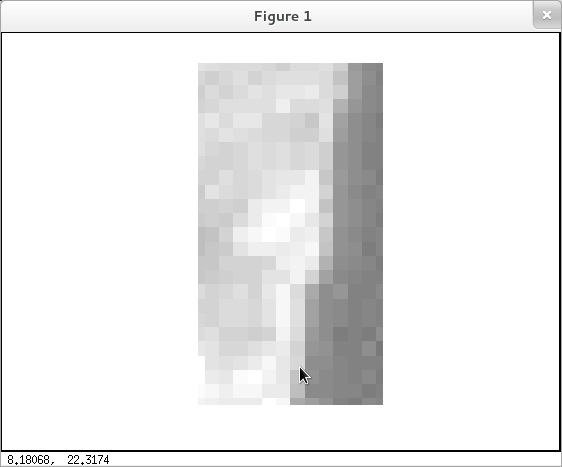

Visión robótica
Hace un par de noches me escribió mi amigo Joel. Es licenciado en Filosofía y está haciendo un doctorado. Me cuenta que está leyendo un libro llamado How the Mind Works, de Steven Pinker, quien actualmente se desempeña en la cátedra de psicología del MIT y es uno de los principales referentes de la psicología evolucionista.
En el libro, contrastando con lo que muestran los directores de cine en las películas, Steven dice:
Si pudiéramos ver el mundo con los ojos de un robot, su aspecto no se parecería al fotograma de una película a base de crucecillas, sino que se asemejaría más a esto:225 221 216 219 219 214 207 218 219 220 207 155 136 135
213 206 213 223 208 217 223 221 223 216 195 156 141 130
206 217 210 216 224 223 228 230 234 216 207 157 136 132
211 213 221 223 220 222 237 216 219 220 176 149 137 132
221 229 218 230 228 214 213 209 198 224 161 140 133 127
220 219 224 220 219 215 215 206 206 221 159 143 133 131
221 215 211 214 220 218 221 212 218 204 148 141 131 130
214 211 211 214 220 218 221 212 218 204 148 141 131 130
211 208 223 213 216 226 231 230 241 199 153 141 136 125
200 224 219 215 217 224 232 241 240 211 150 139 128 132
204 206 208 205 233 241 241 252 242 192 151 141 133 130
200 205 201 216 232 248 255 246 231 210 149 141 132 126
191 194 209 238 245 255 249 235 238 197 146 139 130 132
189 199 200 227 239 237 235 236 247 192 145 142 124 133
198 196 209 211 210 215 236 240 232 177 142 137 135 124
198 203 205 208 211 224 226 240 210 160 139 132 129 130
216 209 214 220 210 231 245 219 169 143 148 129 128 136
211 210 217 218 214 227 244 221 162 140 139 129 133 131
215 210 217 218 214 227 244 221 162 140 139 129 133 131
219 220 211 208 205 209 240 217 154 141 127 130 124 142
229 224 212 214 220 229 234 208 151 145 128 128 142 122
252 224 222 224 233 244 228 213 143 141 135 128 131 129
255 235 230 249 253 240 228 193 147 139 132 128 136 125
250 245 238 245 246 235 235 190 139 136 134 135 126 130
240 238 233 232 235 255 246 168 156 144 129 127 136 134
Cada número representa la luminosidad de una de las millones de manchas que forman el campo visual. Los números menores corresponden a las manchas más oscuras, y los mayores, a las más claras.
Joel me preguntaba si se me ocurría una forma sencilla de convertir estos números en una imagen. El ejercicio es válido y un buen ejemplo de la biblioteca PIL.
from PIL import Image
image = Image.new('L', (14,25))
imageMap = image.load()
f = open('vision1.txt')
lines = f.readlines()
for i, l in enumerate(lines):
for j, v in enumerate(l.split()):
n = int(v)
imageMap[j, i] = n
image.save('vision1.gif')
image.show()
Y esto es (ampliado) lo que está mirando el robot de Steven:
")
update: la versión de Milton usando Octave:
matriz = dlmread('vision1.txt');
matrizNormalizada = matriz ./ max(max(matriz));
imshow(matrizNormalizada);

update 2:
Joel implementó una solución muy ingeniosa utilizando una planilla de cálculos:

Comentarios
Comments powered by Disqus